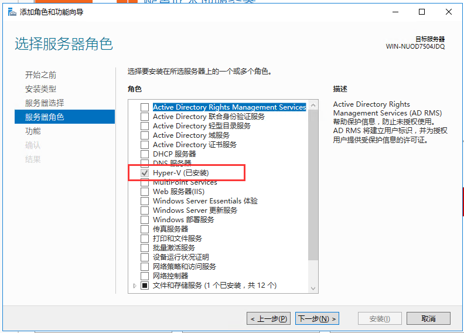
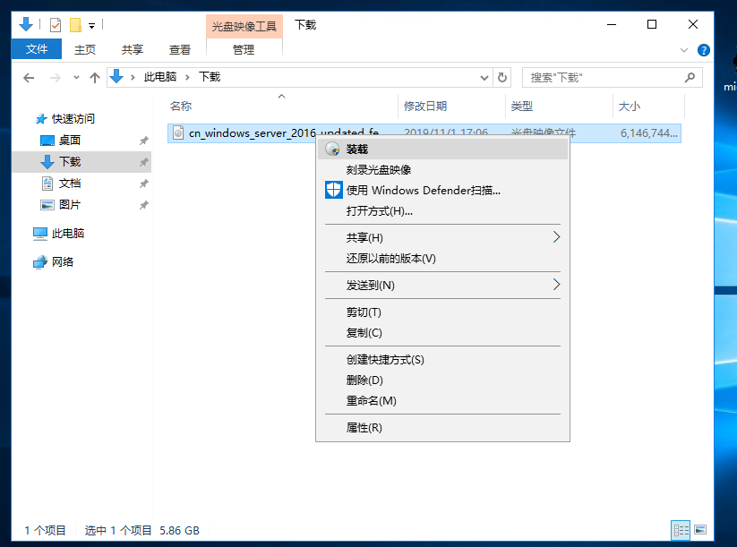
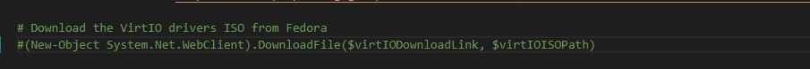

2.5. openstack制作window镜像¶
2.5.1. 环境准备¶
启用hyperv¶

确保powershell 版本>4.0¶
PS C:\Users\Administrator> $PSVersionTable
Name Value
---- -----
PSVersion 5.1.14393.1884
PSEdition Desktop
PSCompatibleVersions {1.0, 2.0, 3.0, 4.0...}
BuildVersion 10.0.14393.1884
CLRVersion 4.0.30319.42000
WSManStackVersion 3.0
PSRemotingProtocolVersion 2.3
SerializationVersion 1.1.0.1
PS C:\Users\Administrator>
2.5.2. 安装软件¶
2.5.3. 安装编译镜像¶
创建目录¶
C:\image: 用于保存生成后的镜像C:\externaldriver: 用于放置镜像需要的其他驱动。比如kvm镜像需要 virt-win.iso中的相关virt驱动
拷贝和解压必要的驱动到 C:\externaldriver 中¶
略
挂载iso镜像到驱动器D:¶

下载 windows-openstack-imaging-tools¶
git clone https://github.com/cloudbase/windows-openstack-imaging-tools.git
创建和运行脚本 create-windows-cloud-image.ps1:¶
参考
cd windows-openstack-imaging-tools/
#如果是制作ironic镜像，那么 ``windows-curtin-hooks`` 和 ``WindowsUpdates`` git submodules 是必须的
通过运行 ``git submodule update --init`` 去检索
git submodule update --init
#导入 ``WinImageBuilder.psm1`` 模块
Import-Module .\WinImageBuilder.psm1
#设置环境变量
$windowsImagePath = "C:\image\window2016.qcow2"
$VirtIOISOPath = "C:\image\virtio.iso"
$virtIODownloadLink = "https://fedorapeople.org/groups/virt/virtio-win/direct-downloads/archive-virtio/virtio-win-0.1.133-2/virtio-win.iso"
(New-Object System.Net.WebClient).DownloadFile($virtIODownloadLink, $VirtIOISOPath)
$wimFilePath = "D:\sources\install.wim"
$extraDriversPath = "C:\externaldriver\"
$image = (Get-WimFileImagesInfo -WimFilePath $wimFilePath)[1]
$switchName = 'external'
#编译镜像
Set-IniFileValue -Path $configFilePath -Section "Default" -Key "wim_file_path" -Value $wimFilePath
Set-IniFileValue -Path $configFilePath -Section "Default" -Key "image_name" -Value $image.ImageName
Set-IniFileValue -Path $configFilePath -Section "Default" -Key "image_path" -Value $windowsImagePath
Set-IniFileValue -Path $configFilePath -Section "Default" -Key "image_type" -Value "MAAS"
Set-IniFileValue -Path $configFilePath -Section "Default" -Key "install_maas_hooks" -Value "True"
Set-IniFileValue -Path $configFilePath -Section "vm" -Key "cpu_count" -Value 2
Set-IniFileValue -Path $configFilePath -Section "vm" -Key "ram_size" -Value (4GB)
Set-IniFileValue -Path $configFilePath -Section "vm" -Key "disk_size" -Value (30GB)
Set-IniFileValue -Path $configFilePath -Section "vm" -Key "external_switch" -Value $switchName
Set-IniFileValue -Path $configFilePath -Section "drivers" -Key "virtio_iso_path" -Value $virtIOISOPath
Set-IniFileValue -Path $configFilePath -Section "drivers" -Key "drivers_path" -Value $extraDriversPath
Set-IniFileValue -Path $configFilePath -Section "updates" -Key "install_updates" -Value "True"
Set-IniFileValue -Path $configFilePath -Section "updates" -Key "purge_updates" -Value "True"
Set-IniFileValue -Path $configFilePath -Section "sysprep" -Key "disable_swap" -Value "True"
# This scripts generates a raw tar.gz-ed image file, that can be used with MAAS
New-WindowsOnlineImage -ConfigFilePath $configFilePath
2.5.4. 注意事项¶
中间下载cloudbase-init会很慢。我们预先下载好相关的文件
virtio.iso¶
1. 下载链接：https://fedorapeople.org/groups/virt/virtio-win/direct-downloads/archive-virtio/virtio-win-0.1.133-2/virtio-win.iso
2. 保存位置 $VirtIOISOPath = "C:\image\virtio.iso"
3. 将 ``create-windows-online-cloud-image.ps1`` 文件中的 ``(New-Object System.Net.WebClient).DownloadFile($virtIODownloadLink, $virtIOISOPath)`` 注释掉

CloudbaseInitSetup_Stable_x64.msi¶
1. 下载地址： https://www.cloudbase.it/downloads/CloudbaseInitSetup_Stable_x64.msi 此链接已经失效，使用这个：https://github.com/cloudbase/cloudbase-init/releases/download/0.9.11/CloudbaseInitSetup_0_9_11_x64.msi
2. 将改文件下载并重名为 ``CloudbaseInit.msi`` 拷贝到 *c://images* 文件夹下
3. 设置环境变量：$MsiPath=c://images/CloudbaseInit.msi
4. 执行Set-IniFileValue -Path $configFilePath -Section "Default" -Key "msi_path" -Value $MsiPath
2.5.5. 代码解读¶
在 https://github.com/cloudbase/windows-openstack-imaging-tools/tree/master/Examples 目录下有三个可执行的脚本。使用这三个脚本可以构造不通场景下的
window镜像，
我们这里以 create-windows-online-cloud-image.ps1 为例。简单介绍一下windows-openstack-imaging-tools的基本代码